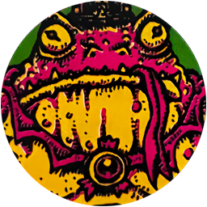

THE SCROGLIN CROWN
A malevolent fishoid sorcerer has found the legendary Crown of Cruelty & established itself as King of the Deep. You must kill it & take the crown!
SETUP
Ġ1 The Catacombs (the king's escape route if he senses a threat)
ĝ Megaverm (Epic Monster)
ĝ Crown of Cruelty (Epic Loot)
| đ Scroglin King at Tower Island |  |
OBJECTIVE
Sell the Crown of Cruelty to the Circle of Warlocks while Trading at Stone Circle. Alternately, you may keep it for yourself by Resting at any Town Ę (other than Stone Circle) while you have the Crown of Cruelty.
THE FISH-WITCH OF TOWER ISLAND
The Scroglin King will remain at Tower Island until alerted to danger. When you move into or Rest at a Lake Port Đ space, you must roll for Stealth; each adventurer must make a PER Test & if you are in Bold č stance you automatically fail. If any adventurer fails, the Scroglin King moves towards Clue Ġ1 starting that turn (unless an adventurer is in its space).
While the Scroglin King is at Clue Ġ1 (the Catacombs), it gains Regenerate 2 due to powerful spells inscribed within the walls of its secret lair.
When you destroy the Scroglin King, take the Crown of Cruelty from the Mission ĝ deck, but do not draw a random Epic Loot card. Then, remove Clue Ġ1 & remove any Perilous Ē counters that were placed on the King.
SUMMONING OF THE VERM
When the first party draws a Danger card with value 6 (if the card has multiple values, look at the highest value shown), place a Perilous Ē counter on top of the Scroglin King's counter (unless there are already 2 Perilous Ē counters there). If the Scroglin King moves, these counters move with it & its space is considered Perilous Ē.
When a second Perilous Ē counter is placed on the Scroglin King, place the Megaverm counter at a random Location (roll D6. 1-2: Ghostgate, 3-4: Fishmonger Camp, 5-6: Dusk Falls), even if it was previously destroyed.
The Megaverm will follow the closest party (starting on the turn after it was placed on the board). If it is destroyed, remove any Perilous Ē counters from the Scroglin King's counter but do not claim any Epic Loot from the Megaverm.
REWARD
Each adventurer gains 1 Luck Ğ. If you sold the Crown of Cruelty to the Circle of Warlocks remove 2 green Doom ğ counters from the track, then search the Danger deck & discard pile for the Stone Circle card & return it to the game box. If you did not deliver the Crown of Cruelty to the Warlocks, remove your Base Ī counter from Stone Circle.
MISSION PATH
If you kept the crown for yourself, you are no longer welcome at Stone Circle & you must find a new place to İEstablish a Base.
If you brought the Crown of Cruelty to the Circle of Warlocks, they use its power to ward the Stone Circle from harm, but to protect all of the Borderlands, you must strike out İAgainst the Hand of Doom!